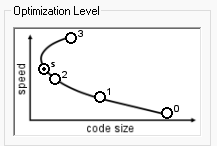

Graphical representation of compiler optimization levels:
| Optimization Flag | Goal | Code Size | Speed |
|---|---|---|---|
| -O0 | No optimization | 🔺 Large | 🔻 Slow |
| -O1 | Basic optimization | 🔽 Smaller | 🔼 Faster |
| -O2 | Balanced (Speed) | 🔽🔽 | 🔼🔼 |
| -O3 | Max speed | 🔽🔽🔽 | 🔼🔼🔼 |
| -Os | Size optimized | 🟢 Smallest | ⚠️ Moderate |
| Compiler | Supports -O0 to -O3 | Supports -Os | Similar to GCC? |
|---|---|---|---|
| GCC | ✅ Yes | ✅ Yes | ✅ Yes |
| Clang | ✅ Yes | ✅ Yes | ✅ Yes |
| ARMCC / Keil | ✅ Yes | ✅ Yes | ⚠️ Somewhat different |
| IAR | ✅ Yes (--opt_level) | ✅ Yes | ⚠️ Slight variation |
| MSVC | ✅ (/O1, /O2) | ❌ No direct -Os | ⚠️ Different optimization logic |
| Optimization Level | When to Use |
|---|---|
| -O0 | For debugging — No optimization; preserves source line mapping |
| -O1 | Basic development, moderate optimization |
| -O2 | Default for release builds — good balance |
| -O3 | Speed critical (e.g., real-time systems), but can bloat code |
| -Os | When flash/code space is tight |
-O3# For size optimization
arm-none-eabi-gcc -Os main.c -o main.elf
# For speed optimization
arm-none-eabi-gcc -O3 main.c -o main.elfYes, the graph logic is broadly consistent across most compilers. But the exact impact on code size and speed depends on:
✅ Always benchmark your build and inspect the .map file for accurate results.